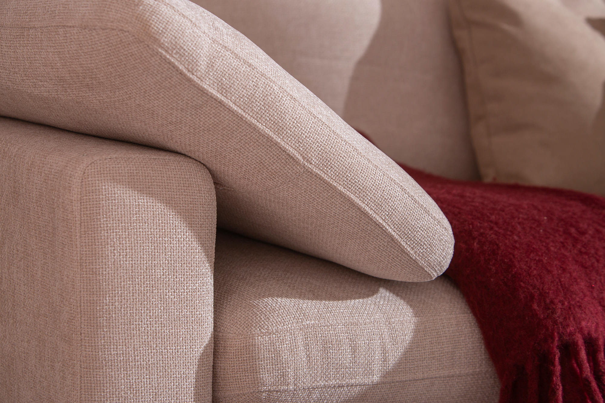
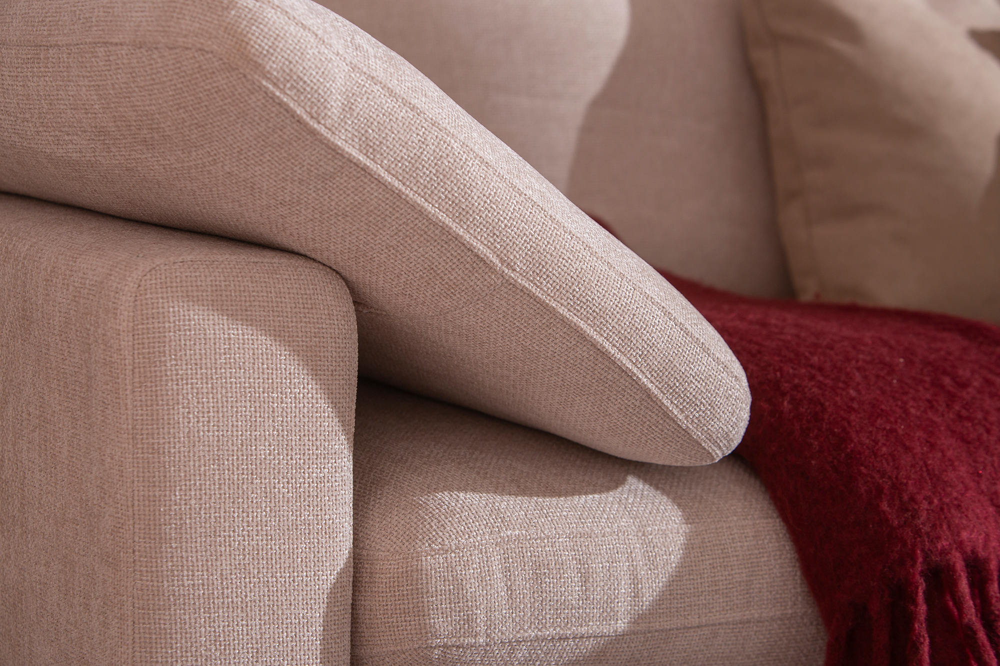
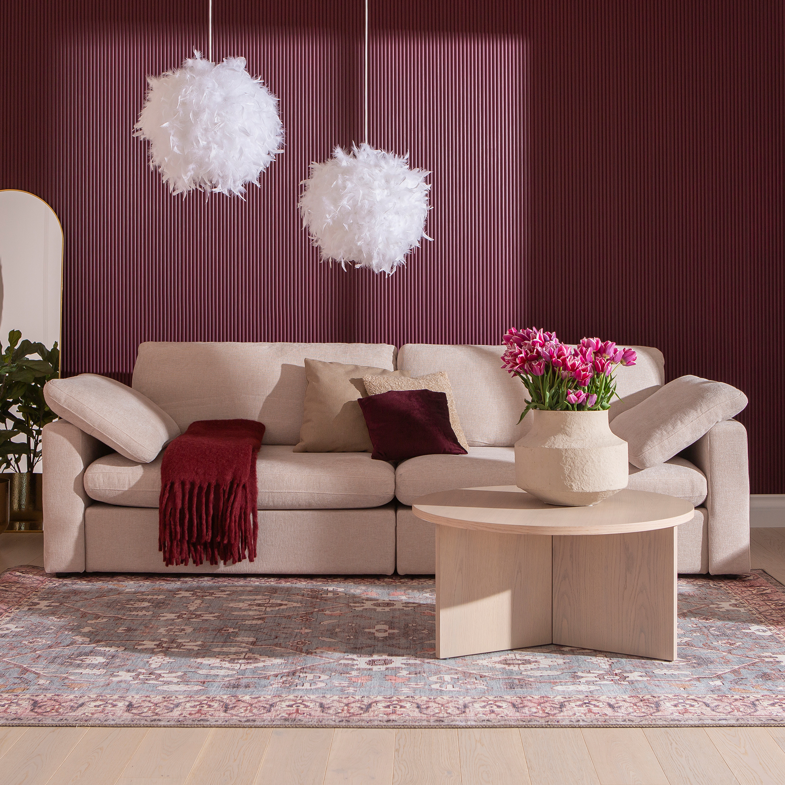
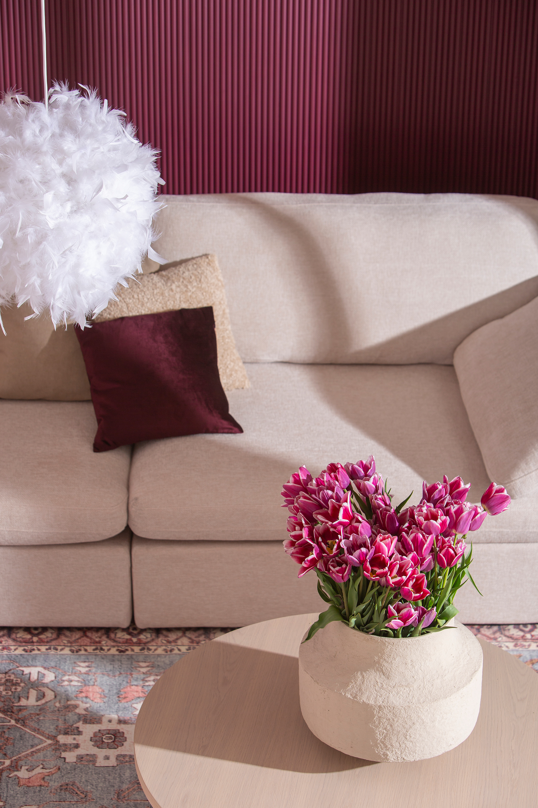
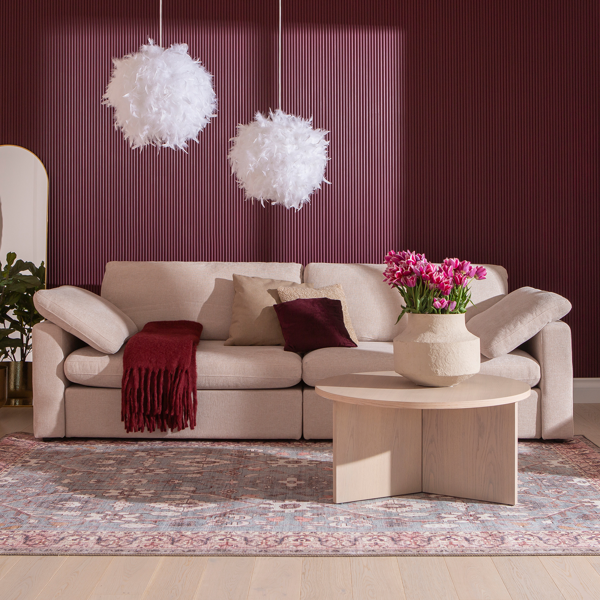
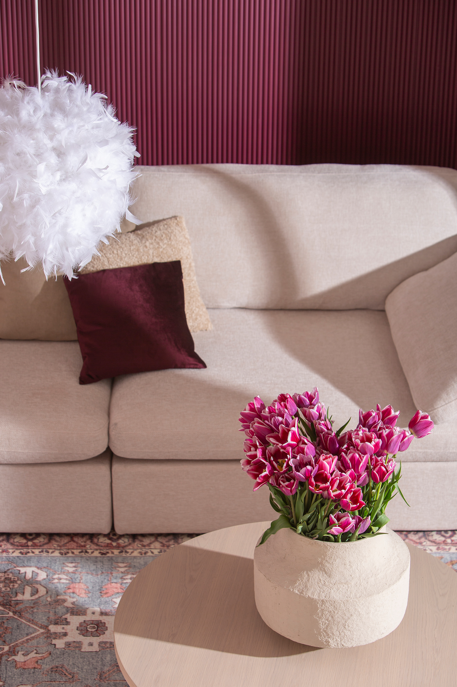

Heaven 4-seat sofa beige
198384
 


 





Description
Experience ultimate relaxation with the Heaven 4-seat sofa in a warm beige tone. Designed to comfortably seat four people, this sofa blends elegant simplicity with cozy comfort, making it a perfect centerpiece for any living room. Available in Gold, Silver, and Bronze tiers, each option offers a unique style and feel to complement your home décor. The high-quality upholstery ensures durability while providing a soft touch. This versatile sofa fits seamlessly into modern and classic interiors alike, embodying the quality and aesthetic excellence found in the NEST & LIVING collection.
Technical specifications
| Color | Beige |
|---|---|
| Seating Capacity | 4 seats |
| Tiers | Gold, Silver, Bronze |